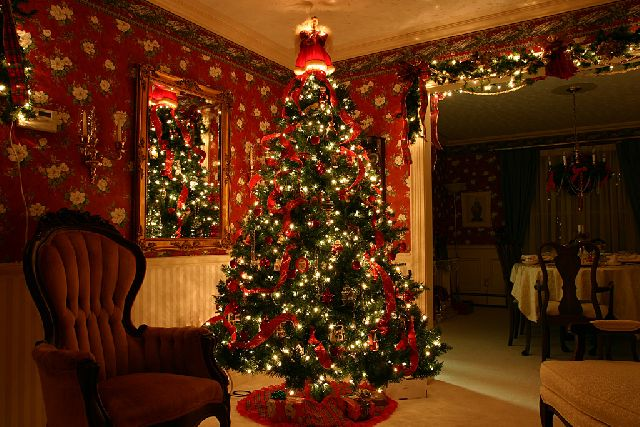

Presents:
A gift or a present is an item given to someone without the expectation of payment. The gifted item should not be owned by the recipient. Although gift-giving might involve an expectation of reciprocity, a gift is meant to be free. In many countries, the act of mutually exchanging money, goods, etc. may sustain social relations and contribute to social cohesion. Economists have elaborated the economics of gift-giving into the notion of a gift economy. By extension the term gift can refer to anything that makes the other happier or less sad, especially as a favour, including forgiveness and kindness. Gifts are also first and foremost presented on occasions - birthdays and Christmas being the main examples.

Christmas Tree:
A Christmas tree is a decorated tree, usually an evergreen conifer such as spruce, pine, or fir associated with the celebration of Christmas. The tree was traditionally decorated with edibles such as apples, nuts, or other foods. In the 18th century, it began to be illuminated by candles which were ultimately replaced by Christmas lights after the advent of electrification. Today, there are a wide variety of traditional ornaments, such as garland, tinsel, and candy canes. An angel or star might be placed at the top of the tree to represent the angel Gabriel or the Star of Bethlehem from the Nativity.
The custom of the Christmas tree developed in early modern Germany (where it is today called Weihnachtsbaum or Christbaum) with predecessors that can be traced to the 16th and possibly 15th century, in which "devout Christians brought decorated trees into their homes". Christmas trees were hung in St. George's Church, Sélestat since 1521. It acquired popularity beyond Germany during the second half of the 19th century. The Christmas tree has also been known as the "Yule-tree", especially in discussions of its folkloristic origins.
